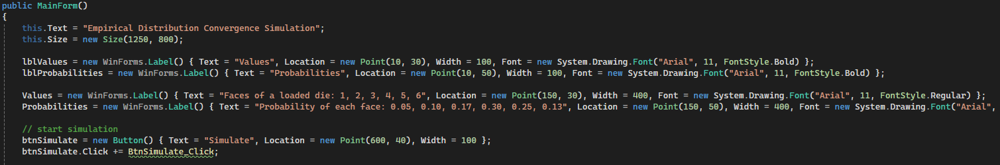

The Fundamental Theorem of Calculus (FTC) connects differentiation and integration, showing that integration can be reversed by differentiation and vice versa. The FTC states:
\[ \int_a^b f(x) \, dx = F(b) - F(a) \]
\[ F(x) = P(X \leq x) = \int_{-\infty}^x f(t) \, dt \]
This means that the CDF \( F(x) \) is the integral of the PDF \( f(x) \) from \(-\infty\) to \( x \).\[ f(x) = \frac{d}{dx} F(x) \]
By the FTC, the process of integration and differentiation shows that:
\[ F(x) = \int_{-\infty}^x f(t) \, dt \Rightarrow f(x) = \frac{d}{dx} F(x) \]
This means that the PDF is the "rate of change" of the CDF, indicating how quickly the cumulative probability accumulates at each value of \( x \).
If we want to find the probability that \( X \) lies between two values \( a \) and \( b \), we use the CDF as follows:
\[ P(a \leq X \leq b) = F(b) - F(a) = \int_a^b f(x) \, dx \]

This code configures the graphical application interface, with labels describing the values and probabilities of the sides of a rigged die and the “Simulate” button that starts the simulation.
The simulation button triggers the SimulateEmpiricalDistribution function, where the
theoretical distribution of a rigged
die simulation is defined by assigning each face a different probability. It then
calculates the mean and variance of the theoretical distribution using functions
CalculateTheoreticalMean and CalculateTheoreticalVariance and
defines variables for the empirical mean and variance, which are updated in a subsequent
function. It also sets the maximum sample size to 500.
In the same function, lists are defined to store values related to various samples (with a growing size up to a maximum of 500) and their respective empirical means and variances, calculated using Welford's algorithm. Samples are generated using the GenerateSample method.
The GenerateSample method selects a value from a discrete distribution using a random number and cumulative probabilities for each value, returning the first value whose cumulative sum exceeds the random threshold r. If no threshold is exceeded, it returns the last value.
Next, mean and variance are calculated through the UpdateMeanVariance method. This uses Walford's algorithm.
The objective of the simulation is to visualize the convergence of the empirical mean and variance of a discrete distribution (in this case, a distribution of a rigged die) incrementally. As can be seen from the simulation as the sample size increases, the empirical distribution (blue line) tends to the theoretical distribution (red line).